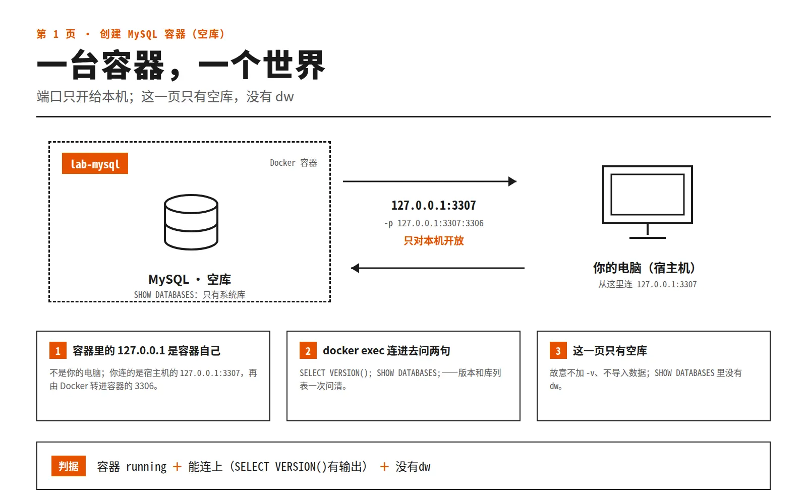
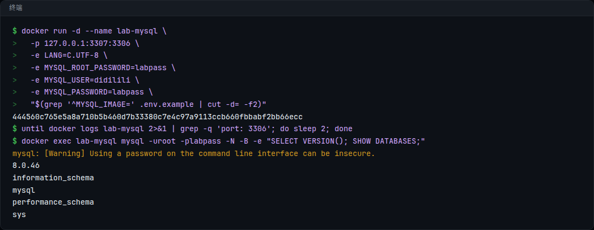

练本 · 阅读版（md 正典派生，改内容请改 manual/page-01.md）
第 1 页 · 创建 MySQL 容器（空库）
城市坐标 · P1 数据仓库大楼（交付物 ②）｜城里第一座楼立起来，但里面是空的——只有一张空库，还没有
dw。
这一页构建什么
创建并启动一个叫 lab-mysql 的 MySQL 容器，端口只开给本机 127.0.0.1:3307，再用 docker exec 连进去问两句（口语常说“起一个容器”）。这一页只做容器本身，不导入任何数据。

猜一猜
先写下答案，再动手。
容器起来、能连上之后，SHOW DATABASES 会列出哪些库？
- A. 有
dw（MySQL 启动时自动建好了） - B. 只有 MySQL 自带的系统库，没有
dw - C. 一个库都没有
动手
以下命令都在仓库根目录执行（有 fixtures/、backend/ 的那一层）。
第 1 条：创建并启动容器。
docker run -d --name lab-mysql \
-p 127.0.0.1:3307:3306 \
-e LANG=C.UTF-8 \
-e MYSQL_ROOT_PASSWORD=labpass \
-e MYSQL_USER=didilili \
-e MYSQL_PASSWORD=labpass \
"$(grep '^MYSQL_IMAGE=' .env.example | cut -d= -f2)"
它会打印一长串容器 ID，看到它就说明容器起来了。这一长串参数你只要记住这几处：
-p 127.0.0.1:3307:3306：冒号左边是宿主机端口，右边是容器内端口。3306 常被本机已装的 MySQL 占着，所以这一课统一用 3307；3307 若也被占，换一个没被占的端口（比如 3308），后面写 3307 的页跟着改。- 这一页故意不加
-v：没有脚本挂载（mount）进容器的/docker-entrypoint-initdb.d/，容器第一次启动时没有脚本自动执行，dw库不会被建出来——空库就是这一页的产物。 MYSQL_ROOT_PASSWORD=labpass：设 root 账号的密码，后面所有mysql -uroot -plabpass都用它。MYSQL_USER/MYSQL_PASSWORD：官方 mysql 镜像启动时会用这两个变量建didilili这个用户（并设好密码）。- 补权限：第 2 页导入的
dw.sql里那句GRANT ALL PRIVILEGES ON dw.* TO 'didilili'@'%'只是补dw库的权限（镜像建出来的用户默认没有库权限），用户不存在时 GRANT 会报错中断——所以这两个变量不能省。
- 补权限：第 2 页导入的
LANG=C.UTF-8：让容器里的mysql认 UTF-8，少了它，第 2 页按中文筛数据会一条也筛不到。- 最后一行不手抄镜像名，从仓库自带的
.env.example里读MYSQL_IMAGE（.env是你本地的密钥配置，被.gitignore忽略，克隆下来没有）。这行一旦被改名或删除，命令会静默传空、拉不到镜像——所以别删它。
顺带把第 2 页要用的输入重定向认下来。 第 2 页导入 dw.sql 的命令是 docker exec -i lab-mysql mysql -uroot -plabpass < fixtures/dw.sql。
输入重定向：< 是宿主机 shell 的重定向：在你的终端里打开 fixtures/dw.sql，把内容接到 docker exec 的标准输入；-i 让容器的标准输入保持打开，这些内容才能递进容器里的 mysql。
少了 -i，mysql 读到的是空输入：命令不建表、不报错，退出码还是 0——“没报错”不等于“执行了”。
第 2 条：等它启动就绪。它一行输出都没有，是在等。
until docker logs lab-mysql 2>&1 | grep -q 'port: 3306'; do sleep 2; done
正常 10 秒左右光标才回来（机器慢会到 20–30 秒）。超过 1 分钟还没回来，按 Ctrl-C，回看第 1 条有没有报错。
第 3 条：连上它，问两件事。
docker exec lab-mysql mysql -uroot -plabpass -N -B -e "SELECT VERSION(); SHOW DATABASES;"
参数：-N -B 让输出只留值、一条一行，方便逐行对；-e 后面是一段 SQL，写几条都行，用分号隔开。
不是错误：终端里还会多一行 mysql: [Warning] Using a password on the command line interface can be insecure.——那是提醒你密码写在命令行上了，不是错误。
你应该看到
第 1 条回一长串容器 ID；第 2 条没有输出；第 3 条 5 行：第一行是 MySQL 版本号，后四行是它自带的 4 个库：
8.0.46
information_schema
mysql
performance_schema
sys
版本号是 8.0. 开头的一串数字，你的机器上可能不是 8.0.46；后四行固定。dw 不在里面——这一页只起容器，没有建库。

对账
- 猜 A（有
dw）：错。第 1 条没有挂载dw.sql，/docker-entrypoint-initdb.d/是空的，容器第一次启动时没有脚本可自动执行；dw要等第 2 页导入。 - 猜 C（一个库都没有）：也不对。那 4 个系统库是 MySQL 自己建的，删不掉也不该删；你看到的库 = 系统库 + 你自己建的库。
- 猜 B（只有系统库）：对。这一页的完成判据不是“有表”，而是“能连上、能读出
SELECT VERSION()”。 - 这也是第 2 页为什么用
docker exec -i手动导入：导入一次就是一次，看得见、查得到、能重跑。- 自动执行的盲区：自动执行只在容器第一次启动时发生一次，脚本出没出错你没有现场。
你现在拥有：一个连得上、能跑 SQL 的 MySQL 容器；它是后面所有数字的唯一来源。
自己改一下
- 去掉第 3 条里的
-N再跑一次：会多出什么？（参考：VERSION()、Database两行表头，值照旧。） - 在第 3 条的
mysql后面加上库名dw（... -N -B dw -e "SHOW TABLES;"）：会报什么错？（参考：ERROR 1049 (42000): Unknown database 'dw'，退出码 1——这一页只起容器，还没有库。）